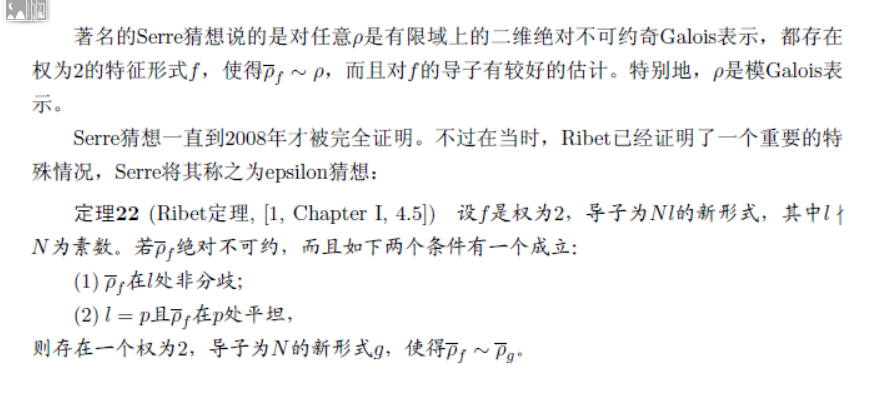
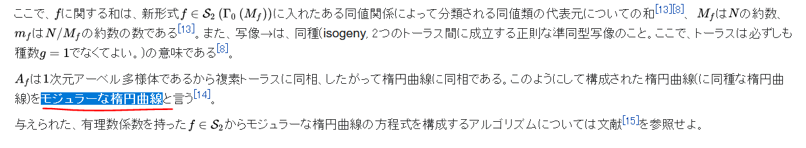
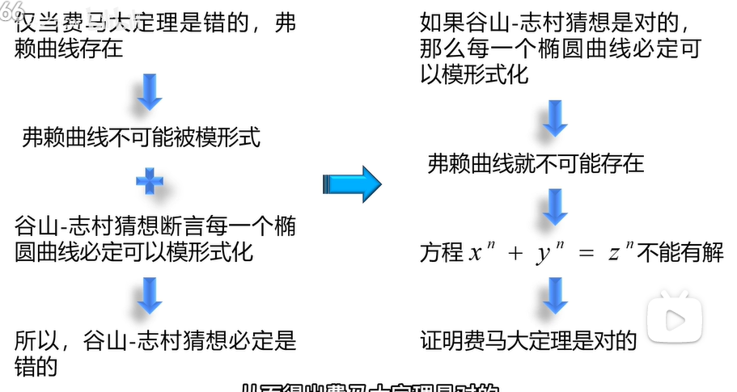

形态不定的Ribet定理
在费马大定理证明过程中，一个重要的步骤是Ribet定理，但通常情况下，人们印象中的其实是它的一个推论，在Ribet的论文里，我们可以找到主要定理和它的推论
推论说的是如果证明Q上的椭圆曲线是模的(其实就是谷山-志村定理)，则费马大定理成立。其实推论没啥，问题在于这个可以被称为Ribet定理的主定理，原始定理的叙述比较古老，所以我们应该看一些比较现代的叙述，但一看反而让我对这个定理的内容越来越模糊了。首先是我学习模形式的书籍
虽然一笔带过了，主要讲的Serre的模猜想，这里我不得不提一嘴，国内的百科真不靠谱，国内搜索Serre猜想，只是随便拿一个出来讲讲，讲得还不清不楚的，最后还是得靠维基百科
叫法并不重要，只要是Serre提出的猜想都可以叫Serre猜想，但不做区分，不叙述具体的内容，谁知道你是不是在胡说八道。我们探究的是Serre的模猜想，在wiki上有详细的叙述
比较让人在意的是absolutely irreducible，有人给出翻译叫绝对不可约，甚至莫名其妙在国内还能找到绝对不可约表示的定义，即扩域保持不可约性。但我认为是错的，这里的absolutely指的是域Q导出绝对(absolute)Galois群，我看过相关定理的证明，其中只用到了不可约性，并没用的所谓的绝对不可约性，另一方面从我目前所看的教程，它只要求表示是奇不可约的，并没要求什么绝对不可约。一个不好的习惯甚至带到了Ribet定理的wiki叙述
比较有趣的是我参考的另一本书
这是一本模形式理论汇总的书，在费马大定理证明概要，它给出这样的Ribet定理，然后又在后面给出了正确的形式
可以发现它并没有给出绝对不可约的条件，其实最让我不爽的是，有些人的胡乱科普，比如有些人读了这本书的开头概要，就以为自己会证明了，还给出来一个错误的翻译
虽然有人会觉得我以小人之心度君子之腹，那我举个很明显的问题，这个定理的第二句话，l=p且表示在p处平坦，先不论它整篇文章没有给出一个表示在某点平坦的定义，光这里莫名其妙给出的p就有些问题了，为什么这句话不直接写成表示在l处平坦，如果去翻原文的话，就会知道p是有具体含义的，Galois表示对应的有限域的特征。而我看了整篇文章，它没有全局声明，就是像“以后用f表示函数”,“以后用E表示椭圆曲线”这样的说法，也没有在定理里面指出来，相比之下有一本高等科普书倒表现得比较好
但然它这里综合了两个人的结果，第一句就是我们Ribet定理，而且也没有绝对不可约的条件，但这本书也有一些令难受的东西，就是翻译，这本书虽然是现代数学基础丛书，但它其实是从日语翻译过来的，甚至因为翻译导致出现了一个叫模椭圆曲线的东西
如果去看日语的原文的话，这么翻译也没啥问题
但是如果真地要去深究出处，也就发源地英语的话，正确的叙述应该是这样的
这个“modular”可以翻译成模的，连起来就是“模的椭圆曲线”，简化一下读成“模椭圆曲线”，好像也没什么问题。无歧义确实没什么问题，但关于“modular”确实存在一种奇异的情况，在下面这种情况
讲的是一个表示是模的，也就是“模的表示”，简化一下就变成了“模表示”，但确实存在模表示(modular representation)这个东西
前者表示与模形式存在关系的表示，后者的话说得却是有限群满足域的特征整除阶的表示，是两个完全不同的东西，都叫成模表示难免有点说不过去，而说成“这个表示是模的”。与此同理，我认为不应称什么模椭圆曲线，而应该说成“这个椭圆曲线是模的”，而且确实有个国人的想法和我差不多
当然他的翻译感觉读起来更顺口，至于民间流传模椭圆曲线其实还好，更离谱的是有人还流传模曲线和*模形式化(即被模函数参数化)*之类的说法，前者是确实存在的一种由同余子群导出的紧黎曼曲面，而后者曲线被函数参数化是确实存在的，但模性定理说得是对应关系，并且对应关系中存在一些量的相等，真正把椭圆曲线参数化的是魏尔斯特拉斯函数，它是一种椭圆函数，而不是模形式。很多的科普视频跟没科普一样
我知道为什么？因为Ribet定理，不仔细研究还真不知道该怎么表示，干脆直接拿个推论算了，比如费马大定理与模性定理矛盾，与Frey曲线矛盾之类的。有人可能会说科普的都是大众，但如果不是搞数学的谁会闲着没事去看费马大定理，而且拿出椭圆曲线，模形式化之类的名词，不加解释，随便地拿来用。你说模形式化，但谁都不知道它是什么意思，而且Ribet定理为啥加个模性定理就推出费马大定理，哦，因为你就是这么写的。所以我对Ribet定理很无语，有这种原始版本的转述
还有这种经过现代加工的东西
为什么我会觉得Ribet定理的科普有问题，因为我觉得这叫科普历史，不叫科普证明，因为你给的Ribet定理相当于在说明上下文，不是什么推出的关系。而且反证的逻辑线也有问题，正确的应该是下面这个
而且上面那个科普还有一个问题，它说方程不可能有解，显然有问题，首先实数解是存在的，(0,0,0)也是它的一组解，所以真正完整的叙述是没有非平凡(nontrivial)整数解。有人可能会说，科普视频那么严谨干嘛，但我认为正因为是科普才要严谨，否则会给读者传递错误的知识，在数学上有些东西是反直觉的，如果依旧以模糊的方式科普，在错误的路上越走越远，干脆就被科普了。其实有位数学家说得很对，数学是拿来建立正确直觉的，而不是让人在错误的直觉上顽固不化。
有人可能觉得为啥通篇基本都是英文，因为没办法，前沿的科学基本都是用英文写的，而且大量都没有翻译，而且像数学这种概念套得十分深的学科，强行翻译的话，很容易引起像我上面所说的那些歧义，甚至直接导致错误的知识流传。还有一点是数学存在大量的证明，而且基本被承认以后都不会有人去看了，所以有些人在搬运定理的时候，可能直接抄过来，也不看看具体的内容和上下文，结果搞得定理搬来搬去都搬得莫名其妙了。其实，在我看来数学应该是可以建立一种通用语的，随便编一个通用语词典，不过看起来还很遥远就是了，主要还是搞数学的没精力，有精力的看不懂数学，还真是一个难以解决的矛盾。